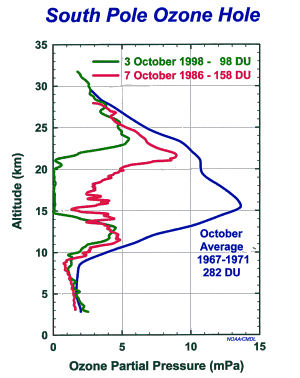

Climate Monitoring & Diagnostics Laboratory |
South Pole Ozone ProgramU.S. Dept. of Commerce / NOAA / OAR / CMDL / OZWV / Ozonesonde / South Pole |
Climate Monitoring & Diagnostics Laboratory |
South Pole Ozone ProgramU.S. Dept. of Commerce / NOAA / OAR / CMDL / OZWV / Ozonesonde / South Pole |

|
The most recent South Pole ozone data:
1999 South Pole Ozone Profiles. Keep Track of the 1999 Ozone Hole
Historical South Pole ozone data:
1998 South Pole Ozone Profiles. 1997 South Pole Ozone Profiles. Ozone Mixing Ratio and Ambient Temperature vs. Altitude and Time
Other information about the ozone hole: CMDL Publications on Antarctic ozone depletion. Another site that posts near-realtime ozone data from the Neumayer station. |
 Back to Ozonesondes
Back to Ozonesondes |
Climate Monitoring & Diagnostics Laboratory |